6 Optimization
6.1 Introduction
To improve is to make better; to optimize is to make best. Optimization is the act of identifying the extreme (cheapest, tallest, fastest…) over a collection of possibilities. Optimization over design space (also called decision space) is a critical feature of many engineering tasks, and has a role in most areas of applied science, including biology. Examples include optimal manipulation of biological systems (e.g. optimal harvesting or optimal drug dosing) or optimal design of biological systems (e.g. robust synthetic genetic circuits). A complementary task is optimal experimental design, which aims to identify the ‘best’ experiment from a collection of possibilities. Model calibration, to be discussed further below, provides another example; here we seek the ‘best fit’ version of a model from a collection of possible options.
Optimization is used to investigate natural systems (i.e. in ‘pure’ science) in cases where nature presents us with an optimal version of a given phenomenon. For example, the principle of energy minimization justifies a wide variety of phenomena, from the shapes of soap bubbles to the configuration of proteins. Darwinian evolution provides another example. Assuming evolution has arrived at optimal designs, we can apply optimization to understand a variety of biological phenomena, from metabolic flux distribution, to brain wiring, to foraging strategies.
This module introduces optimization methods in R. Although simple optimization tasks, such as those addressed by introductory calculus, can be accomplished with paper-and-pencil calculations, most optimization tasks of interest in biology demand computational techniques.
6.2 Fundamentals of Optimization
Figure 1 illustrates some basics terminology associated with optimization. The graph of a function \(f\) of a single variable \(x\) is shown, defined over a domain \([a,b]\). In the context of optimization, we can think of each \(x\)-value in the interval \([a,b]\) as one possible scenario (e.g. enzyme activity, foraging rate, etc.). The function \(f\) maps those scenarios to some objective (e.g. metabolic flux, fitness) to be optimized (either maximized or minimized). The global extrema (i.e. maximum and minimum) represent the goals of optimization.
Figure 6.1: Figure 1: Extreme Values
More generally, we define local extrema (maxima and minima) as cases that appear to be optimal if we restrict attention only to ‘nearby’ possibilities (i.e. \(x\)-values). Most of the theory of optimization methods is dedicated to identifying local optima. These approaches cannot directly identify a global optimum – instead they identify candidate global optima, which then can be compared to one another to identify the ‘best’ result. (A convenient special case occurs for problems where every local optimum is a global optimum; these are called convex optimization problems. Unfortunately, they typically occur only as special cases when addressing biological phenomena.)
6.2.1 Fermat’s Theorem
To illustrate these fundamentals, consider the following two academic examples that rely on basic calculus, specifically on Fermat’s Theorem, which states that local extrema occur at points where the tangent line to a function’s graph is horizontal, i.e. at points where the derivative (the slope of the tangent) is zero (Figure 2).

Figure 6.2: Figure 2: Fermat’s Theorem: local extrema occur at points where the tangent line is horizontal or at endpoints of the domain. Some local extrema are also global extrema.
6.2.1.1 Example 1
Task: Identify the value of \(x\) for which the function \(f(x) = x^2+3x-2\) is minimized.
Solution: Taking the derivative, we find \(f'(x) = 2x+3\). To determine the point(s) where the derivative is zero, we solve: \[f'(x) = 0 \ \ \Leftrightarrow \ \ 2x+3 = 0 \ \ \Leftrightarrow \ \ x = -\frac{3}{2} = -1.5\] As shown in Figure 3, the single local minimum is the global miminum in this case, so \(x=-1.5\) is the desired solution.
Figure 6.3: Figure 3: Graph of \(f(x) = x^2+3x-2\) (Example 1)
6.2.1.2 Example 2
Task: Identify the value of \(x\) for which the function \(f(x) = 3x^4-4x^3-54x^2+108x\) is minimized.
Solution: Taking the derivative, we find \(f'(x) = 12x^3-12x^2-108x+108 = 12(x-3)(x-1)(x+3)\). To determine the point(s) where the derivative is zero, we solve:
\[f'(x) = 0 \ \ \Leftrightarrow \ \ x = 3, 1, -3\] As shown in Figure 4, two of these points are local minima and one is a local maximum. Of the two local minima, \(x=-3\) is where the global minimum occurs.Figure 6.4: Figure 4: Graph of \(f(x) = 3x^4-4x^3-54x^2+108x\) (Example 2)
6.3 Regression
6.3.1 Linear Regression
As mentioned above, finding the ‘best fit’ from a family of models is a common optimization task in science. The simplest example is linear regression: the task of determining a line of best fit through a given set of points.
To illustrate, consider the dataset of \((x,y)\) pairs shown in Figure 5 below, which we can label as \((x_1, y_1)\), \((x_2, y_2)\), \(\ldots\), \((x_N, y_N)\). Several lines are displayed. The optimization task is to identify the ‘best’ line: the one that best captures the trend in the data.
Figure 6.5: Figure 5: Finding a line of best fit
To specify this task mathematically, we need to decide on a measure of quality of fit. We start by recognizing that the line will (typically) fail to pass through most of the points in the dataset. Thus, at each point \(x_i\) we can define an error, which is the difference between the observed \(y\)-value and the model prediction, i.e. the \(y\)-value on the line. If we specify the line as \(y=mx+b\), then the error at \(x_i\) can be defined as \(e_i = y_i-(mx_i+b)\). We then need to combine these errors into a single quality-of-fit measure. This is typically done by squaring the errors and adding them together. (Squaring ensures that both under- and over-estimations contribute equally.) We define the sum of squared errors (SSE) as : \[\mbox{SSE:} \ \ \ e_1^2+e_2^2+ \cdots e_N^2 \ \ = \ \ (y_1-(mx_1+b))^2 + (y_2-(mx_2+b))^2 + \cdots +(y_N-(mx_N+b))^2. \]
We can now pose the model-fitting task as an optimization problem. For each line (that is, each assignment of numerical values to \(m\) and \(b\)), we associate a corresponding SSE. We seek the values of \(m\) and \(b\) for which the SSE is a global minimum.
6.3.1.1 Example 3
Consider a simplified version of linear regression, in which we know that our model (line) should pass through the origin (0,0). That is, instead of lines \(y=mx+b\), we will consider only lines of the form \(y=mx\). We thus have a single parameter value to determine: the slope \(m\). To keep the algebra simple we’ll take a tiny dataset consisting of just two points: \((x_1, y_1) = (2,3)\) and \((x_2, y_2)= (5,4)\), as indicated in Figure 6, below. The line passes through points \((2,2m)\) and \((5, 5m)\).
Figure 6.6: Figure 6: Finding a line of best fit through the origin (Example 3)
The only local extremum (and hence the only candidate for global minimum) is \(m=52/58 = 26/29\). We conclude that the best fit line is \(y=\frac{26}{29}x\).
The analysis in Example 3 can be extended to determine the general solution of the linear regression task. For details, see, e.g. (Fairway, 2002). The solution formula is as follows:
Linear regression formula The best fit line \(y=mx+b\) to the dataset \((x_1, y_1)\), \((x_2, y_2)\), \(\ldots\), \((x_n, y_n)\) is given by \[\begin{eqnarray*} m&=& \frac{\sum_{i=1}^n (x_i-\bar{x})(y_i-\bar{y})}{\sum_{i=1}^n (x_i-\bar{x})^2} \\ b&=& \bar{y}-m\bar{x}, \\ \end{eqnarray*}\] where \(\bar{x}\) and \(\bar{y}\) are the averages \[\begin{eqnarray*} \bar{x}=\frac{1}{n} \sum_{i=1}^n x_i \ \ \ \ \ \ \ \ \ \ \ \ \ \ \ \ \bar{y}=\frac{1}{n} \sum_{i=1}^n y_i \end{eqnarray*}\]
This formula is somewhat unwieldy, but is straightforward to implement. In R, the command lm implements this formula, as the following example illustrates.
6.3.1.2 Example 4
We’ll work with a dataset called iris that is included in R, shown below (via the plot command).
plot(iris$Sepal.Length ~ iris$Petal.Width, xlab = "Petal Width",
ylab = "Sepal Length")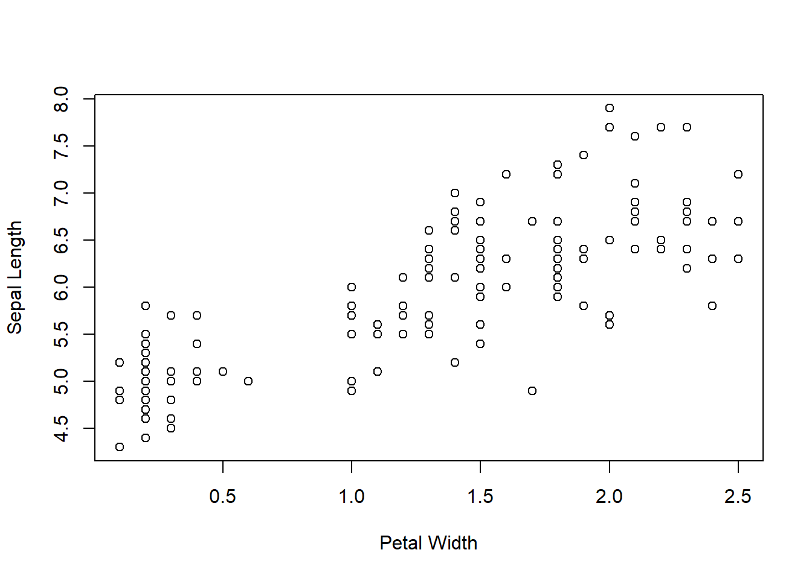
The lm command applies the formula described above to arrive at the line of best fit (i.e. the minimizer of the sum of squared errors). The command below generates the parameters (\(m\) and \(b\)) that specify the line \(y=mx+b\).
lm(iris$Sepal.Length ~ iris$Petal.Width)
Call:
lm(formula = iris$Sepal.Length ~ iris$Petal.Width)
Coefficients:
(Intercept) iris$Petal.Width
4.7776 0.8886 The best-fit line has intercept \(b=4.7776\) and slope is \(m=0.8886\).
We can plot the data together with the line of best fit with the abline command:
plot(iris$Sepal.Length ~ iris$Petal.Width, xlab = "Petal Width",
ylab = "Sepal Length")
abline(lm(iris$Sepal.Length ~ iris$Petal.Width))
6.3.2 Nonlinear Regression
Nonlinear regression is the task of fitting a nonlinear model (e.g. a curve) to a dataset. The setup for this task is identical to linear regression. We begin by selecting a parameterized family of models (i.e. curves), and aim to identify the model (i.e. curve) that minimizes the sum of squared errors when compared to the data. The choice of model family is typically based on the mechanism that produced the data. For example, if we are investigating the rate law for a single-substrate enzyme-catalysed reaction, we might choose the family of curves specified by Michaelis-Menten kinetics, which relate reaction velocity \(V\) to substrate concentration \(S\): \[\begin{eqnarray*} V = \frac{V_{\mbox{max}} S}{K_M+S} \end{eqnarray*}\] Our goal would then be to identify values for the parameters \(V_{\mbox{max}}\) and \(K_M\) that minimize the sum of squared errors when comparing with observed data.
Regression via linearizing transformation: In several important cases, the nonlinear regression task can be transformed into a linear regression task. In the case of Michaelis-Menten kinetics, several linearizing transformations have been proposed, e.g. Eadie–Hofstee and Lineweaver–Burk (Cho and Lim, 2018). Another common example is fitting exponential curves (to describe e.g. population growth or drug clearance). In those cases, application of a logarithm transforms the data so that a linear trend is captured. For example, the relationship \(y = e^{rt}\) becomes, after applying a logarithm, \(Y = \ln(y) = \ln (e^{rt})= rt\). Linear regression on the transformed data \((t_i, Y_i)\) then provides an estimate of the value of \(r\).
Unfortunately, linearizing transformations are only available in a handful of special cases. Moreover, they often introduce biases that can make interpretation of the resulting model difficult.
In general, the nonlinear regression task must be addressed directly. An example of the general procedure in R follows.
6.3.2.1 Example 5
We begin by defining a dataset against which we will fit a Michaelis-Menten curve.
# substrate concentrations
S <- c(4.32, 2.16, 1.08, 0.54, 0.27, 0.135, 3.6, 1.8, 0.9, 0.45,
0.225, 0.1125, 2.88, 1.44, 0.72, 0.36, 0.18, 0.9, 0)
# reaction velocities
V <- c(0.48, 0.42, 0.36, 0.26, 0.17, 0.11, 0.44, 0.47, 0.39,
0.29, 0.18, 0.12, 0.5, 0.45, 0.37, 0.28, 0.19, 0.31, 0)
MM_data = cbind(S, V)
plot(MM_data)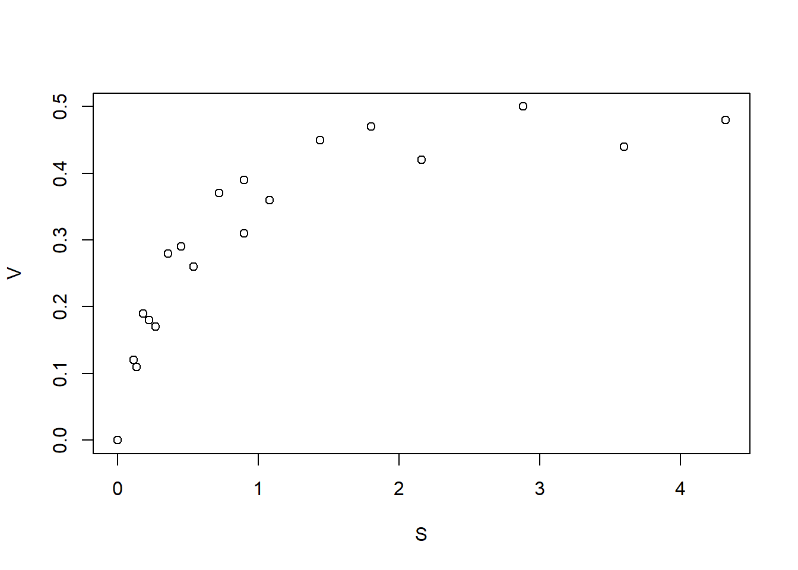
Thenls command can be used for nonlinear regression in R. Like the lm command, the nls function takes as inputs the dataset and the model. In addition, nls requires that the user provide ‘guesses’ for the values of the parameters to be estimated. In this case, we can roughly estimate \(V_{\mbox{max}} \approx 0.5\) as the maximal \(V\)-value that can be achieved, and \(K_M \approx 0.3\) as the \(S\)-value at which \(V\) reaches half of its maximal value.
MMmodel.nls <- nls(V ~ Vmax * S/(Km + S), start = list(Km = 0.3,
Vmax = 0.5)) #perform the nonlinear regression analysis
params <- summary(MMmodel.nls)$coeff[, 1] #extract the parameter estimates
params Km Vmax
0.4187090 0.5331688 We thus arrive at parameter estimates that characterize the best-fit model: \(K_M = 0.4187090\) and \(V_{\mbox{max}} = 0.5331688\)). Further details on using the nls command can be found in (Ritz and Streibig, 2008). We can now plot the best fit model along with the dataset:
plot(MM_data)
curve((params[2] * x)/(params[1] + x), from = 0, to = 4.5, add = TRUE,
col = "firebrick")
From the implementation of nls, the reader might have the mistaken impression that nonlinear regression and linear regression are very similar tasks. Although the problem set-up is similar in both cases (chose model type, then minimize SSE), the strategy for optimization is very different. (The first hint of this is the need to provide a set of ‘guesses’ to nls.) As we saw above, the solution to the linear regression task can be stated as a general formula. For nonlinear regression, no such formula exists. Worse, as we’ll discuss in the next section there is no procedure (algorithm) that is guaranteed to find the solution!
6.4 Iterative Optimization Algorithms
The best techniques for addressing the general nonlinear regression task are iterative global optimization routines. As we’ll discuss below, these algorithms start with a ‘guess’ for the parameter values and then take steps through parameter space to improve the quality of that estimate. In the exercise above, the nls command executed this kind of algorithm, which is why it requires that the user supply an initial ‘guess.’
6.4.1 Gradient Descent
A simple iterative optimization algorithm is gradient descent, which can be understood intuitively via a thought experiment. Imagine finding your way to a valley bottom in a thick fog. The fog obscures your vision so that you can only discern changes in elevation in your immediate vicinity. To make your way to the valley bottom, it would be reasonable to take each step of your journey in the direction of steepest decline. This strategy is guaranteed to lead to a local minimum, but cannot guarantee arrival at the lowest point: the global minimum. That is, the search may lead to a local minimum at which there is no direction of local descent, and so the algorithm gets `stuck’.
Mathematically, the local change in ‘elevation’ is determined by evaluating the objective function at points near the current estimate to determine the direction of steepest descent. (Technically, this involves a linearization of the function at the current position, or equivalently a calculation of the gradient vector). A step is then taken in this direction, and the process is repeated from this updated estimate. To implement this algorithm, a number of details have to be specified: how long should each step be? How many steps should be taken? Or should there be some other ‘termination condition’ that will trigger the end of the journey? (Each of these decisions involve a trade-off between precision and computation time. For instance, taking very small steps will guarantee a smooth path down the steepest route, but might take a great many step to complete the journey.) Termination conditions are often specified in terms of the local topography: the algorithm stops when the current estimate is at a sufficiently flat position (no downhill direction detected).
To illustrate the gradient descent approach, consider the following algorithm, which incorporates two termination conditions: a maximum number of allowed iterations and a threshold for shallowness.
library(numDeriv) # contains functions for calculating gradient
# define function that implements gradient descent. Inputs
# are the objective function f, the initial parameter
# estimate x0, the size of each step, the maximum number of
# iterations to be applied, and a threshold gradient below
# which the landscape is considered flat (at which
# iterations are terminated)
grad.descent = function(f, x0, step.size = 0.05, max.iter = 200,
stopping.deriv = 0.01, ...) {
# record the number of parameters to be estimated (i.e.
# the dimension of the parameter space)
n = length(x0)
# initialize a matrix to record the sequence of
# estimates
xmat = matrix(0, nrow = n, ncol = max.iter)
# the first row of matrix xmat is the initial 'guess'
xmat[, 1] = x0
for (k in 2:max.iter) {
# loop over the allowed number of steps Calculate
# the gradient (a vector indicating steepness and
# direct of greatest ascent)
grad.current = grad(f, xmat[, k - 1], ...)
# Check termination condition: has a flat valley
# bottom been reached?
if (all(abs(grad.current) < stopping.deriv)) {
k = k - 1
break
}
# Step in the opposite direction of the gradient
xmat[, k] = xmat[, k - 1] - step.size * grad.current
}
xmat = xmat[, 1:k] # Trim any unused columns from xmat
return(list(x = xmat[, k], xmat = xmat, k = k))
}6.4.1.1 Example 6
We’ll first demonstrating the performance of this algorithm on a simple function with a single local minimum. (Here and below, code for generating plots is suppressed to avoid clutter. All code can be accessed in the .rmd file posted at the associated github repository.)
Paraboloid = function(x) {
return((x[1] - 3)^2 + 1/3 * (x[2])^2 + 2)
}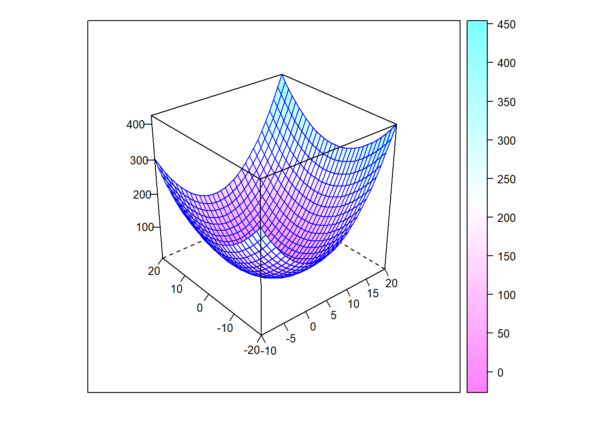
In this case, we expect that the minimum (valley bottom) will be reached from any initial ‘guess.’ Starting from four distinct points, the algorithm follows the paths shown below.
# define a set of initial guess values
x0 = c(-1.9, -1.9)
x1 = c(-3, 1.1)
x2 = c(5, -5)
x3 = c(5, 7)
# run the gradient descent algorithm from each
gd = grad.descent(simpleFun, x0, step.size = 1/3)
gd1 = grad.descent(simpleFun, x1, step.size = 1/3)
gd2 = grad.descent(simpleFun, x2, step.size = 1/3)
gd3 = grad.descent(simpleFun, x3, step.size = 1/3)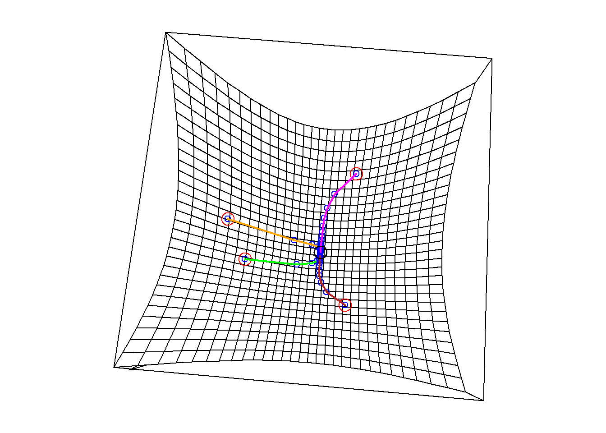
The table below shows the estimates and the corresponding objective values reached by gradient descent starting from those four points. Each run has arrived at essentially the same point: \((3, 0)\), where the function reaches its mimimum value of 2.
x1 x2 objective value
x0_out 3 -0.01246994 2.000052
x1_out 3 0.01193417 2.000047
x2_out 3 -0.01200889 2.000048
x3_out 3 0.01307634 2.0000576.4.1.2 Example 7
Next, let’s consider a function that has multiple local minima. The second plot below is interactive, allowing you to rotate the surface.
Example_7_function = function(x) {
return((1/2 * x[1]^2 + 1/4 * x[2]^2 + 3) + cos(2 * x[1] +
1 - exp(x[2])))
}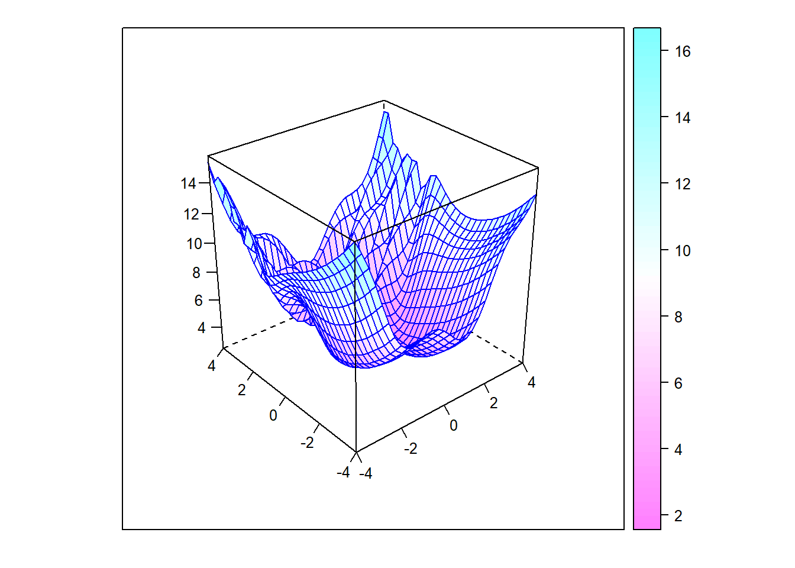
Again, we’ll apply gradient descent from a set of initial guess positions:
# define a set of initial guess values
x0 = c(0.5, 0.5)
x1 = c(-0.1, -1.3)
x2 = c(-1.5, 1.3)
x3 = c(-1.2, -1.4)
x4 = c(-0.5, -0.5)
# run the gradient descent algorithm from each
gd0 = grad.descent(Example_7_function, x0, step.size = 0.01,
max.iter = 1000)
gd1 = grad.descent(Example_7_function, x1, step.size = 0.01,
max.iter = 1000)
gd2 = grad.descent(Example_7_function, x2, step.size = 0.01,
max.iter = 1000)
gd3 = grad.descent(Example_7_function, x3, step.size = 0.01,
max.iter = 1000)
gd4 = grad.descent(Example_7_function, x4, step.size = 0.01,
max.iter = 1000)From some initial guess values, the algorithm successfully reaches the global minimum. From others, it gets stuck at a local minimum. The plot below shows the paths followed by the algorithm, leading to two separate valley bottoms.
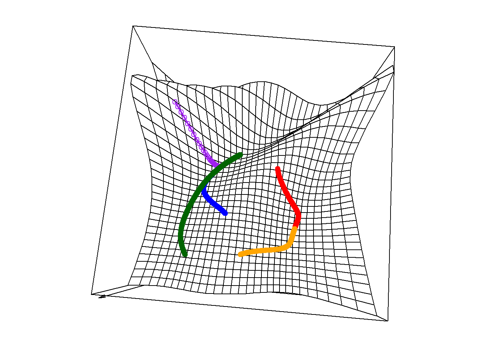
The table below shows the final estimate and the corresponding objective value reached by gradient descent starting from those five starting points.
x1 x2 objective value
x0_out 1.0697802 -0.5784429 2.810101
x1_out 1.0633307 -0.6030409 2.810100
x2_out -0.3775909 1.1636290 2.426837
x3_out -0.3776268 1.1636047 2.426838
x4_out -0.3776816 1.1635677 2.4268396.4.1.3 Exercise 1
Consider the following dataset, which corresponds to measurements of drug concentration in the blood over time. try fitting the data to an exponential \(C(t) = a e^{-r t}\). You’ll find that the best-fit model is not satisfactory. Next, try fitting a biexponential \(C(t) = a_1 e^{-r_1 t} + a_2 e^{-r_2 t}\). You’ll find a more suitable agreement. For fitting, you can either use the nls command or the gradient descent function above (along with a sum of squared errors function). For nls, you may find the algorithm is very sensitive to your choice of initial guess (and will fail if the initial guess is not fairly accurate). For gradient descent, you’ll need to use a small stepsize, e.g. \(10^{-5}\), and a large number of iterations.
t <- c(0, 10, 20, 30, 40, 50, 60, 70, 80, 90, 100)
C <- c(5.585, 4.392, 3.2564, 2.9971, 2.6493, 2.3863, 2.0838,
2.0862, 1.7009, 1.7339, 1.4162)
BE_data = cbind(t, C)
plot(BE_data)
6.4.2 Global Optimization
The default optimization algorithm used by nls is the Gauss-Newton method, which is a generalization of Newton’s method. (You may recall using Newton’s method to solve nonlinear equations in an introductory calculus course.) Gauss-Newton is a refinement of gradient descent in which the local curvature of the function is used to predict the position of the bottom of the local valley.
Both gradient descent and the Gauss-Newton method are designed to reach the bottom of the valley in which the initial guess lies. If that’s not the global minimum, then the algorithm will not be successful. So, how does one select a ‘good’ initial guess? Unfortunately, there’s no general answer to this question. In some cases, one can use previous knowledge of the system to identify a solid initial guess. If no such previous knowledge is available, sometimes a ‘wild guess’ is all we have. In those cases, we may have little confidence that the algorithm will arrive at a global minimum. The simplest way to improve the chance of achieving a global minimum is the multi-start strategy: choose many initial guesses, and run the algorithm from each (as in Example 7 above). This can be computationally expensive, but if the initial guesses are spread widely over the parameters space, one can expect that the global minimum will be achieved.
A number of methods have been developed to complement the multi-start approach. These are known as global optimization routines. They are also known as heuristic methods, because their performance cannot be guaranteed in general: there are no guarantees that they’ll find the global minimum, nor are there solid estimates of how many iterations will be required for them to carry out a satisfactory search of the parameter space. We will consider two commonly used heuristic methods: simulated annealing and genetic algorithms.
6.4.2.1 Simulated Annealing
Simulated annealing is motivated by the process of annealing, which is a heat treatment by which the physical properties of metals can be altered. Simulated annealing is an iterative algorithm; the algorithm starts at an initial guess, and then steps through the search space. In contrast to gradient descent, the steps taken in simulated annealing are partially random. Consequently, the path followed from a particular initial condition won’t be repeated if the algorithm is run again from the same point. (Algorithms that incorporate randomness are often referred to as Monte Carlo methods, in reference to the European gambling centre.) At each step, the algorithm begins by identifying a candidate next position. (This point could be selected by a variant of gradient descent, or some other method). The value of the objective at this candidate point is then compared with the objective value at the current point. If the objective is lower at the candidate point (i.e. this step takes the algorithm downhill), then the step is taken and a new iteration begins. If the value of the objective is larger at the candidate point (i.e. the step makes things worse), the step can still be taken, but only with a small probability. Both the size of the steps and the probability of accepting ‘wrong’ (uphill) steps are tied to a cooling schedule: a decreasing ‘temperature’ profile. At high temperatures, large steps are considered and ‘wrong’ steps are taken frequently; as the temperature drops, only smaller steps are considered, and fewer ‘wrong’ steps are allowed. By analogy, imagine a ping-pong ball resting on a curved landscape. One strategy to move the ball to the lowest valley bottom is to shake the table. To following a strategy inspired by simulated annealing, we could begin by applying violent shakes (high temperature) which would result in the ball bouncing across much of the landscape. By slowly reducing the severity of the shaking, we could ensure the ball would settle into a local minimum at a valley bottom. The hope is that if the cooling schedule is well-chosen, the ball would have sampled many valleys, and would end up at the bottom of the lowest valley. Simulated annealing can be combined with a multi-start strategy to further ensure broad sampling of the search space.
6.4.2.2 Example 8
To illustrate, we’ll apply simulated annealing to the optimization task in Example 7 above, using the same initial guess points. We’ll use the GenSA library to implement the algorithm (described in detail here). Calls to GenSA require that we specify (i) the objective function; (ii) an initial guess; and (iii) upper and lower bounds for the search values for each parameter. (Optional input parameters allow the user to modify internal features of the algorithm such as the cooling schedule and stepping protocol.) To begin, we apply the algorithm at the first initial guess:
library(GenSA)
out0 <- GenSA(par = x0, lower = c(-2, -2), upper = c(2, 2), fn = Example_7_function)
out0[c("value", "par")]$value
[1] 2.426731
$par
[1] -0.3629442 1.1734789
The result of this function call is recorded in the variable out0 which indicates the minimal value of the objective achieved (2.426731) and the parameter values at which this minimum occurs \((x,y)= (-0.3629442, 1.1734789)\) (matching the solution founds above). Next, we’ll call GenSA starting from each of the initial guesses that were provided to the gradient descent algorithm in Example 7.
$value
[1] 2.426731
$par
[1] -0.3629442 1.1734789$value
[1] 2.426731
$par
[1] -0.3629442 1.1734789$value
[1] 2.426731
$par
[1] -0.3629442 1.1734789$value
[1] 2.426731
$par
[1] -0.3629442 1.1734789$value
[1] 2.426731
$par
[1] -0.3629442 1.1734789We see that in each case, simulated annealing has avoided getting ‘stuck’ in the local minima. It has achieved the same optimized value from every initial guess.
The plot below provides some insight into how the simulated annealing runs proceed. Iterations (steps) are shown along the horizontal axis. The vertical axis shows values of the objective function. The blue points represents the function value at the current position, while the red shows the minimum achieved so far. The minimum is found rather quickly, but the algorithm continues to explore the search space.

6.4.2.3 Example 9
To give the simulated annealing algorithm a more challenging task, consider the following function, which has many local minima. (Near the origin, the graph resembles an egg carton). \[f(x,y) = (y+47)\sin\left (\sqrt{|y+(x/2)+47|)}-x\sin(\sqrt{|x-(y+47)|} + \frac{1}{1000}\left(x^2+y^2\right)\right)\]
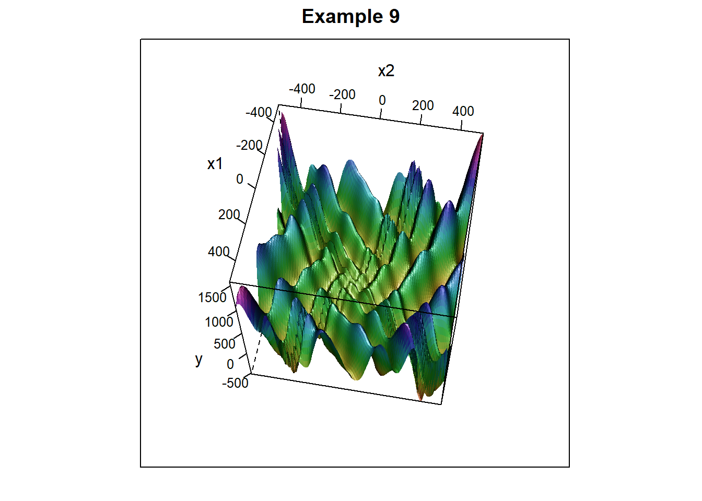
We will use simulated annealing to search for the minimum value. We’ll start the algorithm from two different initial guesses. Both runs result in the same solution:
# define a set of initial guess values
# initial guesses
x1 <- c(100, 100)
x2 <- c(0, 100)
# specify bounds
lower <- rep(-200, 2)
upper <- rep(200, 2)
egg.out1 <- GenSA(par = x1, lower = lower, upper = upper, fn = f.egg)
egg.out2 <- GenSA(par = x2, lower = lower, upper = upper, fn = f.egg)
egg.out1[c("value", "par")]$value
[1] -266.8175
$par
[1] -161.38281 95.54245egg.out2[c("value", "par")]$value
[1] -266.8175
$par
[1] -161.38281 95.54245From the plots below we see that the algorithm occasionally gets stuck at local minima, but in both cases has visited the lowest point.
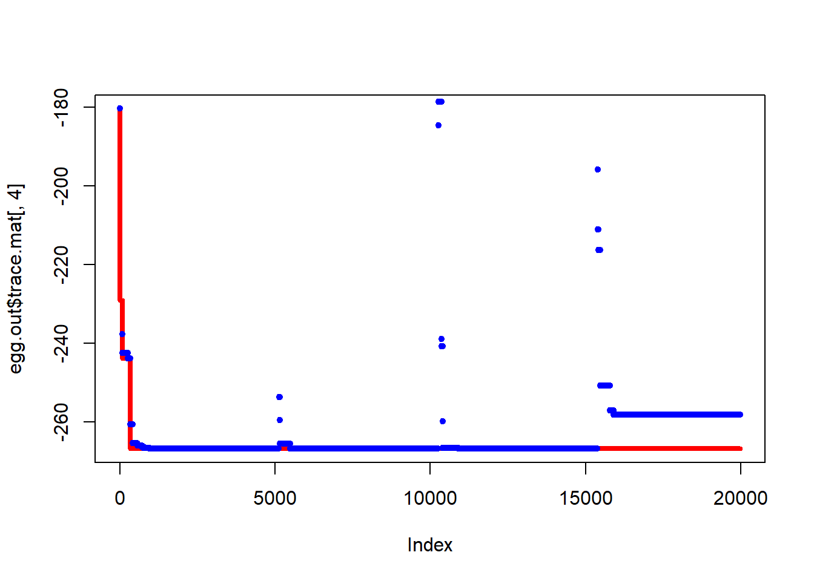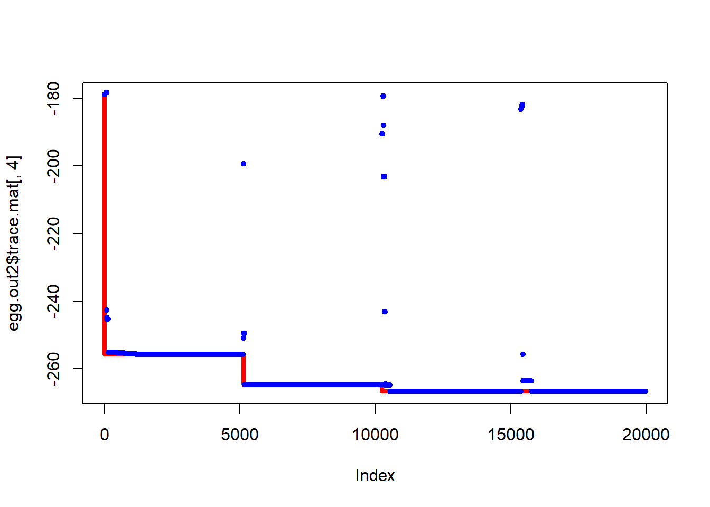
We next consider a heuristic algorithm in which multiple paths through the search space are followed simultaneously.
6.4.2.4 Genetic Algorithms
Genetic algorithms are inspired by Darwinian evolution. The algorithm begins with the specification of a population of initial guesses. At each iteration of the algorithm, this population ‘evolves’ toward improved estimates of the global minimum. This ‘evolution’ step involves three substeps: selection, mutation, and cross-over. In the selection step, the population is pruned by removing a fraction that are not sufficiently fit. (Here fitness corresponds to the value of the objective function being minimized.) Then, mutations are introduced into the remaining population by adding small random perturbations to their position in the search space. Finally, a new generation is produced by crossing members of the current population. This can be done in several ways; the simplest is to generate crosses as averages of the numerical values of the two ‘parents.’ Through several generations, this process leads to a population with high fitness (minimal objective) after a thorough exploration of the search space. Genetic algorithms are a subset of the more general class of evolutionary algorithms all of which involve simultaneous exploration of the search space through multiple paths.
6.4.2.5 Example 10
To implement a genetic algorithm, we’ll make use of thega function, from Library(GA), described here. The call to ga requires that we specify the objective function, lower and upper bounds to define the search space, and the number of iterations to execute. The initial population is generated automatically. The ga routine maximizes the objective function, so we enter our objective with a negative sign to achieve minimization. We consdier again the function from Example 7.
Example_7_fun = function(x, y) {
return((1/2 * x^2 + 1/4 * y^2 + 3) + cos(2 * x + 1 - exp(y)))
}
library(GA)
ga <- ga(type = "real-valued", fitness = function(x) -Example_7_fun(x[1],
x[2]), lower = c(-2, -2), upper = c(2, 2), maxiter = 30)GA | iter = 1 | Mean = -4.041041 | Best = -2.873942
GA | iter = 2 | Mean = -3.552414 | Best = -2.480774
GA | iter = 3 | Mean = -3.385857 | Best = -2.480774
GA | iter = 4 | Mean = -3.316562 | Best = -2.475568
GA | iter = 5 | Mean = -3.233971 | Best = -2.453920
GA | iter = 6 | Mean = -2.942318 | Best = -2.429493
GA | iter = 7 | Mean = -3.057510 | Best = -2.429493
GA | iter = 8 | Mean = -2.929332 | Best = -2.427140
GA | iter = 9 | Mean = -2.862539 | Best = -2.427125
GA | iter = 10 | Mean = -2.611589 | Best = -2.427125
GA | iter = 11 | Mean = -2.665873 | Best = -2.426933
GA | iter = 12 | Mean = -2.649276 | Best = -2.426795
GA | iter = 13 | Mean = -2.574107 | Best = -2.426795
GA | iter = 14 | Mean = -2.667271 | Best = -2.426775
GA | iter = 15 | Mean = -2.516660 | Best = -2.426756
GA | iter = 16 | Mean = -2.705621 | Best = -2.426756
GA | iter = 17 | Mean = -2.598244 | Best = -2.426756
GA | iter = 18 | Mean = -2.580032 | Best = -2.426756
GA | iter = 19 | Mean = -2.584246 | Best = -2.426745
GA | iter = 20 | Mean = -2.654025 | Best = -2.426745
GA | iter = 21 | Mean = -2.551965 | Best = -2.426745
GA | iter = 22 | Mean = -2.612507 | Best = -2.426745
GA | iter = 23 | Mean = -2.675908 | Best = -2.426745
GA | iter = 24 | Mean = -2.628224 | Best = -2.426745
GA | iter = 25 | Mean = -2.664589 | Best = -2.426745
GA | iter = 26 | Mean = -2.631207 | Best = -2.426745
GA | iter = 27 | Mean = -2.598906 | Best = -2.426745
GA | iter = 28 | Mean = -2.553829 | Best = -2.426745
GA | iter = 29 | Mean = -2.591655 | Best = -2.426745
GA | iter = 30 | Mean = -2.482629 | Best = -2.426745Plotting the results of the genetic algorithm search, we see improvement in the overall behaviour from generation to generation.
plot(ga)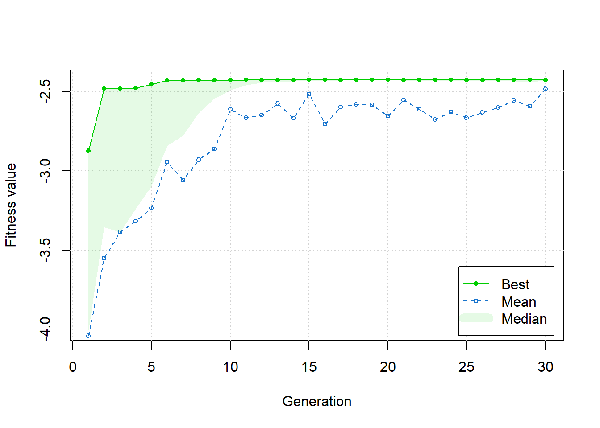
The summary displayed below shows that the solutions reached by the genetic algorithm agrees with the solution found by simulated annealing.
summary(ga)-- Genetic Algorithm -------------------
GA settings:
Type = real-valued
Population size = 50
Number of generations = 30
Elitism = 2
Crossover probability = 0.8
Mutation probability = 0.1
Search domain =
x1 x2
lower -2 -2
upper 2 2
GA results:
Iterations = 30
Fitness function value = -2.426745
Solution =
x1 x2
[1,] -0.3675713 1.1698126.4.2.6 Exercise 2
Apply the genetic algorithm with ga to confirm the minimum of the egg-carton function in Example 9.
6.5 Calibration of Dynamic Models
The principles of nonlinear regression carry over directly to calibration of more complex models. In many domains of biology, dynamic models are used to describe the time-varying behaviour of systems (from, e.g., biomolecular networks to physiology to ecology). Dynamic models take many forms; a commonly used formulation is based on ordinary differential equations (i.e. rate equations). These models are deterministic (i.e., they do not incorporate random effects) and assume that the dynamics occur in a spatially homogeneous (well-mixed) environment. Despite these limitations, these models can describe a wide variety of dynamic behaviours, and are useful for investigations across a range of biological domains.
Differential equation models used in biology often take the form \[\begin{equation*} \frac{d}{dt} {\bf x}(t) = {\bf f}({\bf x}(t), {\bf p}) \end{equation*}\] where components of the time-varying vector \({\bf x}(t)\) are the states of the system (e.g. population sizes, molecular concentrations), the components of vector \({\bf p}\) are the model parameters: numerical values that represent fixed features of the system and its environment (e.g. interaction strengths, temperature, nutrient availability), and the vector-valued function \({\bf f}\) describes the rate of change of the state variables. As a concrete example, consider the Lotka-Volterra equations, a classical model describing interacting predator and prey populations: \[\begin{eqnarray*} \frac{d}{dt} x_1(t) &=& \alpha x_1(t) - \beta x_1(t) x_2(t)\\ \frac{d}{dt} x_2(t) &=& \gamma x_1(t) x_2(t) - \delta x_2(t)\\ \end{eqnarray*}\]
Here \(x_1\) is the size of the prey population; \(x_2\) is the size of the predator population. The prey are presumed to have access to resources that support exponential growth in the absence of predation: growth at rate \(\alpha x_1(t)\). Interactions between prey and predators, assumed to occur at rate \(x_1(t) x_2(t)\), lead to decrease of the prey population and increase of the predator population (characterized by parameters \(\beta\) and \(\gamma\) respectively). Finally, the prey suffer an exponential decline in population size in the absence of prey: decay at rate \(\delta x_2(t)\). A simulation of the model, shown below, demonstrates the a boom-bust cycle of oscillations in both populations. Simulation of the model requires specification of numerical values for each of the four model parameters, \(\alpha\), \(\beta\), \(\gamma\), \(\delta\), and the two initial population sizes \(x_1(0)\) and \(x_2(0)\). We generate the simulation by a call to theode function from the deSolve library described here.
library(deSolve)
# define the dynamic model
LotVmod <- function(Time, State, Pars) {
with(as.list(c(State, Pars)), {
dx1 = alpha * x1 - beta * x1 * x2
dx2 = delta * x1 * x2 - gamma * x2
return(list(c(dx1, dx2)))
})
}
# specify the model parameters, the initial populations,
# and the time course
Pars <- c(alpha = 30, beta = 5, gamma = 2, delta = 6)
State <- c(x1 = 0.008792889, x2 = 1.595545)
Time <- seq(0, 6, by = 0.01)
# simulate the model
out <- as.data.frame(ode(func = LotVmod, y = State, parms = Pars,
times = Time))
# plot the output
plot(out$x2 ~ out$time, type = "l", xlab = "Time", ylab = "Population Density",
main = "Predatory-Prey Model Simulation", col = "red", ylim = c(0,
20))
points(out$x1 ~ out$time, type = "l", add = TRUE)
legend(3.8, 20, legend = c("Prey", "Predator"), col = c("red",
"black"), pch = 20)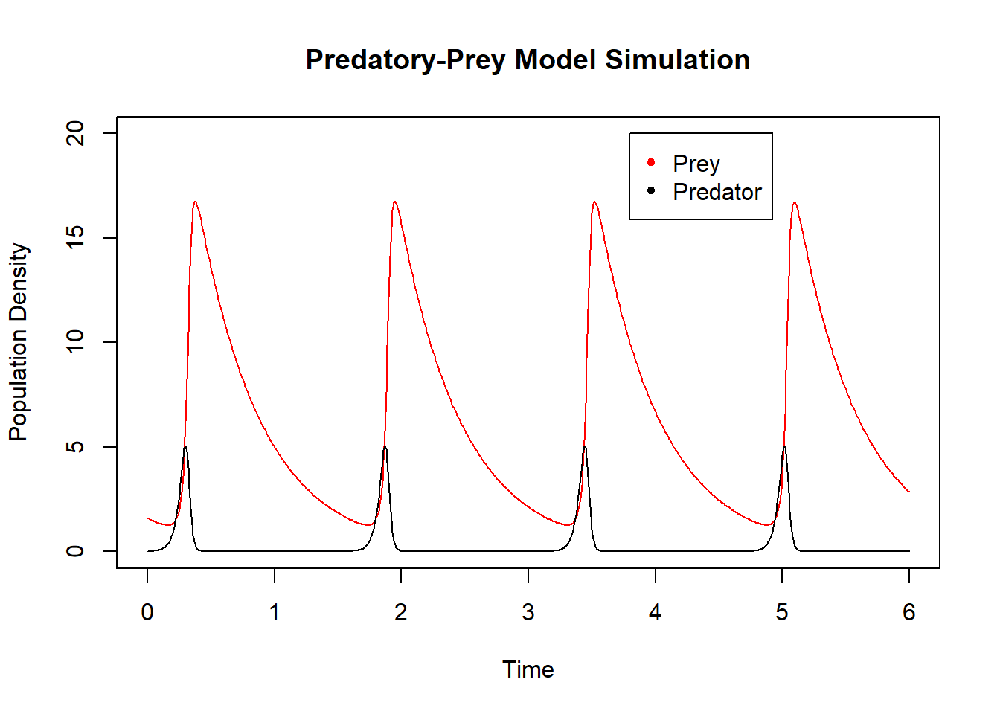
The dataset shown below corresponds to observations of an oscillatory predator-prey system. To calibrate the Lotka-Volterra model to this data we seek values of the model parameters for which simulation of the model provides the best fit. As in the regression tasks described previously, the standard measure for quality of fit is the sum of squared errors. We thus proceed with a minimization task: for each choice of numerical values for the model parameters, we compare model simulation with the data and determine the sum of squared errors. We aim to minimize this measure of fit over the space of model parameters.
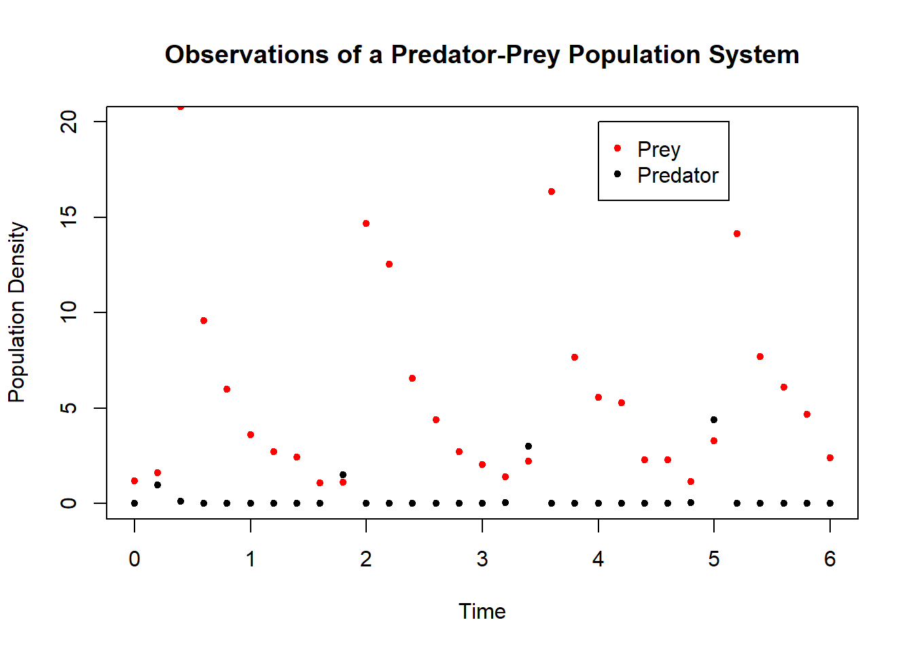
6.5.0.1 Example 11
To illustrate, we’ll consider the case that two of the model parameter values have been established independently: \(\alpha= 30\) and \(\delta=6\). We’ll then calibrate the model by estimating values for parameters \(\beta\) and \(\gamma\). We begin by building a sum-of-squared errors function that takes values of \(\beta\) and \(\gamma\) as arguments. We will use the observed population values at time zero as initial condition for the simulations.
# define SSE function
library(deSolve)
determine_sse <- function(p) {
# inputs are the two unknown model parameters collected
# into a vector p=[beta, gamma]
newPars <- c(p[1], p[2])
# initial populations are the observed values at time
# zero for x and y, respectively
newState <- c(x1 = 0.008792889, x2 = 1.595545)
# define the time-grid (same as above)
Time <- seq(0, 6, by = 0.01)
t_obs <- c(0, 0.2, 0.4, 0.6, 0.8, 1, 1.2, 1.4, 1.6, 1.8,
2, 2.2, 2.4, 2.6, 2.8, 3, 3.2, 3.4, 3.6, 3.8, 4, 4.2,
4.4, 4.6, 4.8, 5, 5.2, 5.4, 5.6, 5.8, 6)
# dynamics as before
newLotVmod <- function(Time, State, newPars) {
with(as.list(c(State, newPars)), {
dx1 = x1 * (30 - p[1] * x2)
dx2 = -x2 * (p[2] - 6 * x1)
return(list(c(dx1, dx2)))
})
}
# run the simulation with the user-specified values for
# beta and gamma
new_out <- as.data.frame(ode(func = newLotVmod, y = newState,
parms = newPars, times = Time))
# generate vector of predictions to align with vector
# of observations
x1_pred <- new_out$x1[seq(1, length(new_out$x1), 20)]
x2_pred <- new_out$x2[seq(1, length(new_out$x2), 20)]
sse <- sum((x1_obs_data - x1_pred)^2) + sum((x2_obs_data -
x2_pred)^2)
return(sse)
}We now call an optimization routine to search the space of \(\beta\) and \(\gamma\) values to minimize this SSE function. We apply the simulated annealing function GenSA as described above, with initial guess of \(\beta=1\), \(\gamma=1\):
library(GenSA)
p1 = c(1, 1)
lower <- c(0.1, 0.1)
upper <- c(10, 10)
out0 <- GenSA(par = p1, lower = lower, upper = upper, fn = determine_sse,
control = list(maxit = 4))
out0[c("value", "par")]$value
[1] 45.34987
$par
[1] 4.915015 2.018205The search algorithm has identified values of \(\beta=4.915\) and \(\gamma=2.018\) as minimizer, with the minimal sum of squares error value of 45.58991.
The best fit model simulation is shown along with the data below:
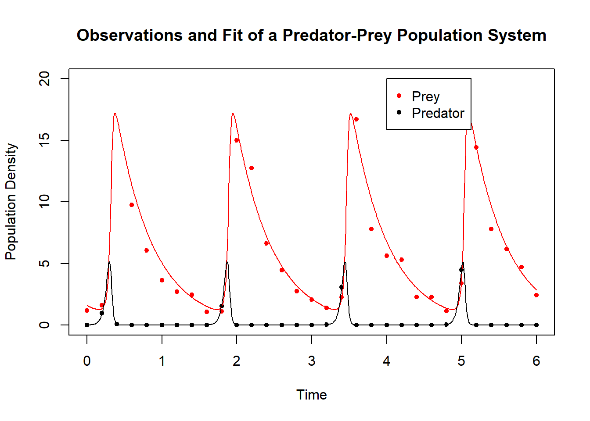
A comprehensive discussion of calibration and uncertainty analysis of dynamic biological models can be found in (Ashyraliyev et al. 2009).
6.5.0.2 Exercise 3
Following the process in Example 11, calibrate all four model parameters \(\alpha\), \(\beta\), \(\gamma\), and \(\delta\) to the following dataset, with initial states \(x_1(0)=0.01\) and \(x_2(0)=1.0\). Use either simulated annealing or a genetic algorithm. You can generate a simulation with the predictions at the time-points corresponding to the observations by setting Time <- seq(0, 8, by = .2) in the simulation script above. If you have trouble finding a suitable initial guess, try \(\alpha=10\), \(\beta=1\), \(\gamma=1\), \(\delta=1\).
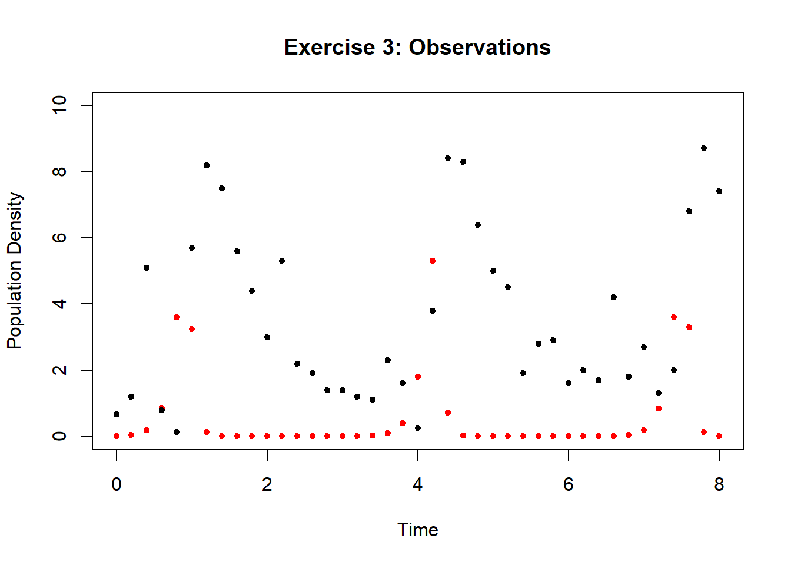
t_obs_ex <- c(0, 0.2, 0.4, 0.6, 0.8, 1, 1.2, 1.4, 1.6, 1.8, 2,
2.2, 2.4, 2.6, 2.8, 3, 3.2, 3.4, 3.6, 3.8, 4, 4.2, 4.4, 4.6,
4.8, 5, 5.2, 5.4, 5.6, 5.8, 6, 6.2, 6.4, 6.6, 6.8, 7, 7.2,
7.4, 7.6, 7.8, 8)
x1_obs_ex <- c(0.001, 0.043, 0.18, 0.86, 3.6, 3.24, 0.13, 0.0075,
0.00095, 0.0079, 0.00012, 0.00012, 0.00015, 0.00026, 0.00057,
0.0016, 0.0052, 0.021, 0.084, 0.39, 1.8, 5.3, 0.72, 0.028,
0.0024, 0.01, 0.00019, 0.00013, 0.00013, 0.00019, 0.00037,
0.00095, 0.0062, 0.01, 0.04, 0.18, 0.84, 3.6, 3.3, 0.13,
0.0091)
x2_obs_ex <- c(0.67, 1.2, 5.1, 0.78, 0.13, 5.7, 8.2, 7.5, 5.6,
4.4, 3, 5.3, 2.2, 1.9, 1.4, 1.4, 1.2, 1.1, 2.3, 1.6, 0.25,
3.8, 8.4, 8.3, 6.4, 5, 4.5, 1.9, 2.8, 2.9, 1.6, 2, 1.7, 4.2,
1.8, 2.7, 1.3, 2, 6.8, 8.7, 7.4)6.6 Uncertainty Analysis and Bayesian Calibration
So far, we’ve used regression analysis to provide specific estimates of parameter values. Regression is usually followed by uncertainty analysis, which provides some measure of confidence in those parameter value estimates. For instance, in the case of linear regression, 95% confidence intervals on the parameter estimates and corresponding confidence intervals on the model predictions are supported by extensive statistical theory, and can be readily generated in R, as follows. Consider again the linear regression fit from Example 4 above.
library(ggplot2)
data("iris")
iris.lm <- lm(Sepal.Length ~ Petal.Width, data = iris)
new.dat <- seq(min(iris$Petal.Width), max(iris$Petal.Width),
by = 0.05)
pred_interval <- predict(iris.lm, newdata = data.frame(Petal.Width = new.dat),
interval = "prediction", level = 0.95)In example 4, we found best fit model parameters of \(b=4.7776\) and \(m=0.8886\). The plot below shows 95% confidence intervals on the model predictions.
plot(iris$Petal.Width, iris$Sepal.Length, xlab = "Sepal Length",
ylab = "Petal Width", main = "Regression", pch = 16)
abline(iris.lm, col = "firebrick", lwd = 2)
lines(new.dat, pred_interval[, 2], col = "steelblue", lty = 2,
lwd = 2)
lines(new.dat, pred_interval[, 3], col = "steelblue", lty = 2,
lwd = 2)
legend(4, 105, legend = c("Best-fit Line", "Prediction interval"),
col = c("firebrick", "steelblue"), lty = 1:2, cex = 0.8)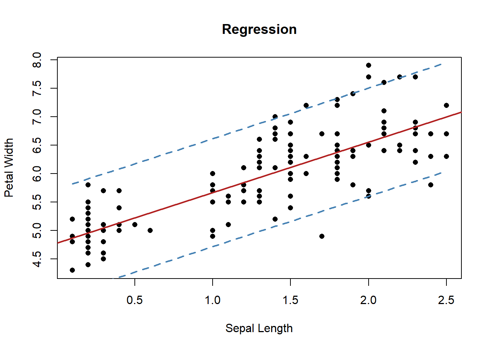
The confint function determines 95% confidence intervals on the estimates of the parameters (the intercept \(b\) and the slope \(m\)).
2.5 % 97.5 %
(Intercept) 4.6335014 4.9217574
Petal.Width 0.7870598 0.9901007For nonlinear regression (including calibration of dynamic models), the theory is less helpful, but estimates of uncertainty intervals can be achieved. Recall the nonlinear regression fit from Example 5 above, where the best-fit values were founds as \(K_M =0.4187090\) and \(V_{\mbox{max}}=0.5331688\).
# substrate concentrations
S <- c(4.32, 2.16, 1.08, 0.54, 0.27, 0.135, 3.6, 1.8, 0.9, 0.45,
0.225, 0.1125, 2.88, 1.44, 0.72, 0.36, 0.18, 0.9, 0)
# reaction velocities
V <- c(0.48, 0.42, 0.36, 0.26, 0.17, 0.11, 0.44, 0.47, 0.39,
0.29, 0.18, 0.12, 0.5, 0.45, 0.37, 0.28, 0.19, 0.31, 0)
MM_data = cbind(S, V)
MMmodel.nls <- nls(V ~ Vmax * S/(Km + S), start = list(Km = 0.3,
Vmax = 0.5)) #perform the nonlinear regression analysis
params <- summary(MMmodel.nls)$coeff[, 1] #extract the parameter estimates
plot(MM_data)
curve((params[2] * x)/(params[1] + x), from = 0, to = 4.5, add = TRUE,
col = "firebrick")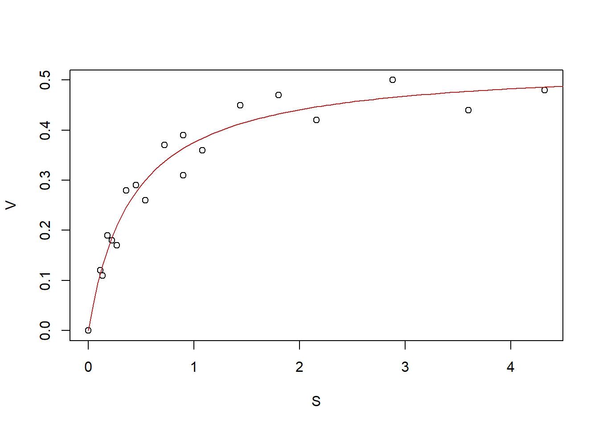
Applying the confit function generates confidence intervals for the parameter estimates
confint(MMmodel.nls)Waiting for profiling to be done... 2.5% 97.5%
Km 0.3143329 0.5528199
Vmax 0.4899962 0.5816347Bayesian methods address the regression task by combining calibration and uncertainty in a single process. The basic idea behind Bayesian analysis (founded on Bayes Theorem, which may be familiar from elementary probability), is to start with some knowledge about the parameter estimates (analogous to the initial guess supplied to nonlinear regression) and then use the available data to refine that knowledge. In the Bayesian context, instead of the initial guess and refined estimate being single numerical values, they are distributions. In Bayesian terminology, we being with a prior distribution, which may be based on previously established expert knowledge. A commonly used prior is a normal distribution centered at a good initial estimate. In other cases the prior may be a uniform distribution over a wide range of possible values, indicating minimal previously established knowledge about the parameter values. Application of a Bayesian calibration scheme uses the available data to generate an improved distribution of the parameter values, which is called the posterior distribution. A successful Bayesian calibration could take a `wild guess’ uniform prior and return a tightly-centered posterior. Uncertainty can then be gleaned directly from the posterior distribution.
6.6.0.1 Example 12
Here we’ll consider a straightforward implementation of a Bayesian approach: Approximate Bayesian Computation (ABC). This approach is based on a simple idea: the rejection method, in which we sample repeatedly from the prior distribution and reject all samples that do not satisfy a pre-specified tolerance for quality of fit. (This is reminiscent of the selection step in genetic algorithms: culling unfit members of a population.) The samples that are not rejected form the posterior distribution.
To illustrate, we’ll revisit the Michaelis-Menten data from Example 5 above. We select uniform priors for both parameters: \(K_M\) and \(V_{\mbox{max}}\) both uniform on \([0,1]\).
In the call below, we sample from the prior distributions of \(K_M\) and \(V_{\mbox{max}}\) 200000 times. We set the acceptance threshold as 0.15. That is, parameter pairs that give rise to SSE values below 0.15 are accepted; others are rejected. The histograms below show the uniform priors along with the posteriors. The algorithm has successfully tightened the distributions about the best-fit parameter estimates established above (\(K_M =0.4187090\) and \(V_{\mbox{max}}=0.5331688\)).
[1] 2225We see that only 2225 of 200 000 samples were accepted, yielding an acceptance rate of about 1%. The acceptance rate can be tuned by choice of the rejection threshold. A low acceptance rate gives rise to a computationally expensive algorithm, while a high acceptance rate can lead to poor estimation.
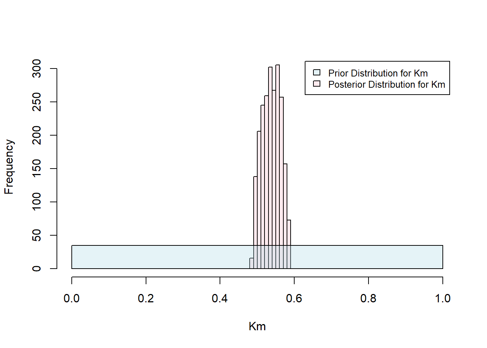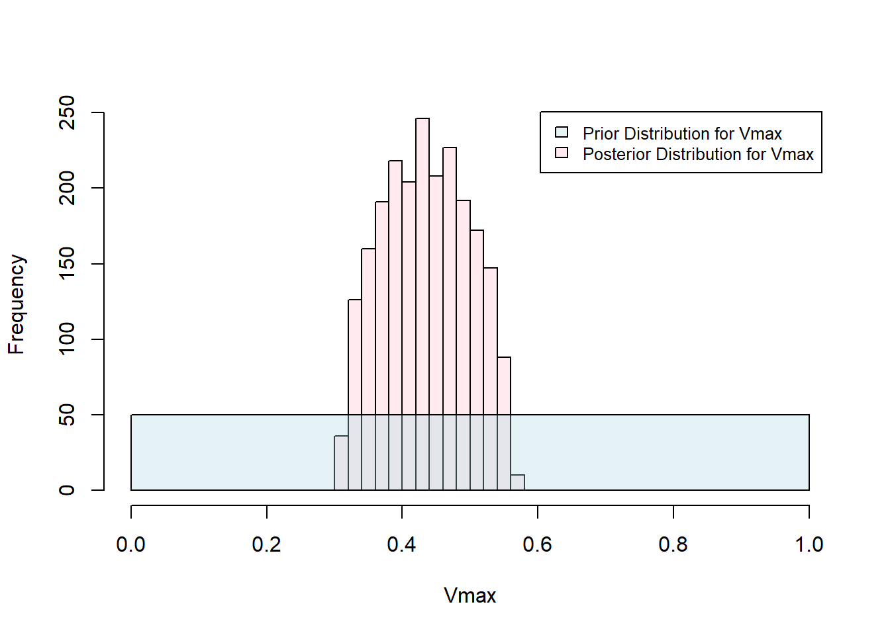
Typically, approximate Bayesian computation is implemented as a sequential method, in which a sequence of rejection steps is applied, with the distribution being refined at each step (generating, in essence, a sequence of posterior distributions, the last of which is considered to be the best description of the desired parameter estimates). The EasyABC package can be used to implement sequential ABC. (More details on this package can be found in (Beaumont, 2019) and here.)
6.6.0.2 Exercise 4
Consider the task of finding the minimum of the function \(f(x,y)=x^4 + y^2\), plotted below. Clearly, the minimum is zero, and numerical optimization routines will have no trouble estimating that solution. However, because the curvature at the minimum is much different along the \(x\)- and \(y\)-directions, most numerical algorithms will do a better job estimating one parameter compared to the other. This can be well-illustrated by applying the rejection method to this problem and noting the relative spread in the posterior distributions. Implement the rejection algorithm provided above with uniform prior distributions on [-1, 1] for both the \(x\) and \(y\) values. Choose a rejection threshold that provides an acceptance rate of about 1%. Which estimate is provided with more confidence (i.e. which posterior is more tightly distributed? How can you relate that back to the curvature of the function at the minimum?.
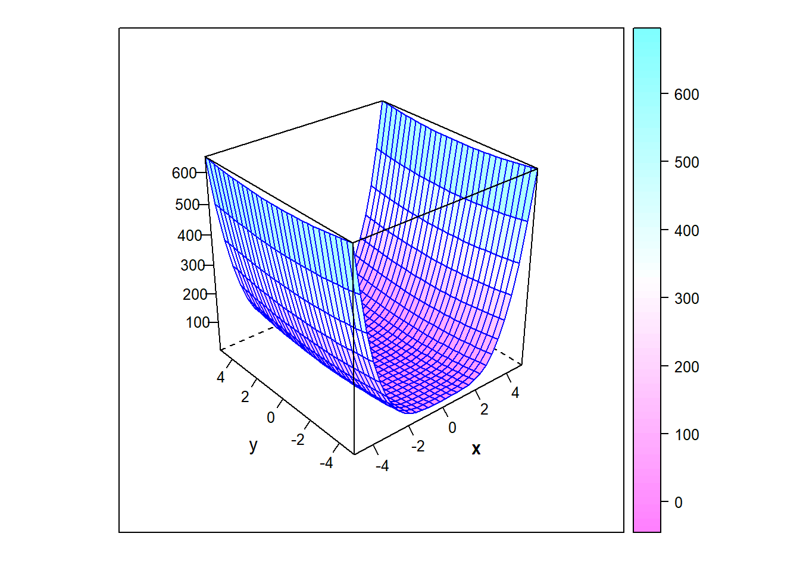
6.6.0.3 Exercise 5
Repeat example 11 by applying the rejection algorithm to estimate the values of \(\beta\) and \(\gamma\) by fitting the Lotka-Volterra model to the data provided below. Use initial conditions \(x = 0.008792889\), \(y = 1.595545\) as in the example. Use uniform prior distributions of [2,30] for \(\beta\) and [1,4] for \(\gamma\), and choose a rejection threshold that provides an acceptance rate of about 1%. Do you find that one parameter is more confidently estimated (tighter distribution) than the other? Use the data shown below. To avoid errors in the simulation, you can add the options method = "radau", atol = 1e-6, rtol = 1e-6 to the call to ode.
t_obs_ex5 <- c(0, 0.2, 0.4, 0.6, 0.8, 1, 1.2, 1.4, 1.6, 1.8,
2, 2.2, 2.4, 2.6, 2.8, 3, 3.2, 3.4, 3.6, 3.8, 4, 4.2, 4.4,
4.6, 4.8, 5, 5.2, 5.4, 5.6, 5.8, 6, 6.2, 6.4, 6.6, 6.8, 7,
7.2, 7.4, 7.6, 7.8, 8)
x_obs_ex5 <- c(0.0091, 0.043, 0.2, 0.82, 3.4, 2.9, 0.12, 0.0077,
0.00093, 0.00026, 0.00014, 0.00013, 0.00015, 0.00025, 0.00054,
0.0015, 0.0051, 0.02, 0.087, 0.36, 1.7, 5.6, 0.66, 0.029,
0.0024, 0.00048, 0.00019, 0.00012, 0.00013, 0.00019, 0.00035,
0.001, 0.003, 0.01, 0.041, 0.19, 0.88, 3.8, 3.2, 0.13, 0.0078)
y_obs_ex5 <- c(0.82, 1.1, 0.98, 0.65, 1.1, 5.1, 7.1, 7.9, 4.3,
3.5, 3.8, 3.9, 2.5, 2.1, 1.6, 1.4, 1.2, 1, 0.92, 0.57, 0.73,
3.6, 6.7, 9.1, 5.5, 4.7, 4.5, 3, 2.9, 2.7, 1.7, 2, 1.7, 1.3,
0.98, 0.98, 0.84, 1.6, 6.5, 8.2, 7.7)6.6.1 Feedback
We value your input! Please take the time to let us know how we might improve these materials. Survey
6.7 References
Ashyraliyev, M., Fomekong‐Nanfack, Y., Kaandorp, J. A., & Blom, J. G. (2009). Systems biology: parameter estimation for biochemical models. The FEBS journal, 276(4), 886-902.
Beaumont, Mark A. “Approximate bayesian computation.” Annual review of statistics and its application 6 (2019): 379-403.
Cho, Yong-Soon, and Hyeong-Seok Lim. “Comparison of various estimation methods for the parameters of Michaelis-Menten equation based on in vitro elimination kinetic simulation data.” Translational and clinical pharmacology 26.1 (2018): 39-47.
Fairway, Julien, (2002) Practical Regression and Anova using R. https://cran.r-project.org/doc/contrib/Faraway-PRA.pdf
Ritz, C and Streibig, J. C., Nonlinear Regression with R, Springer, 2008.
6.8 Answer Key
6.8.1 Exercise 1
Consider the following dataset, which corresponds to measurements of drug concentration in the blood over time. try fitting the data to an exponential \(C(t) = a e^{-r t}\). You’ll find that the best-fit model is not satisfactory. Next, try fitting a biexponential \(C(t) = a_1 e^{-r_1 t} + a_2 e^{-r_2 t}\). You’ll find a more suitable agreement. For fitting, you can either use the nls command or the gradient descent function above (along with a sum of squared errors function). For nls, you may find the algorithm is very sensitive to your choice of initial guess (and will fail if the initial guess is not fairly accurate). For gradient descent, you’ll need to use a small stepsize, e.g. \(10^{-5}\), and a large number of iterations.
t <- c(0, 10, 20, 30, 40, 50, 60, 70, 80, 90, 100)
C <- c(5.58, 4.39, 3.26, 3, 2.65, 2.39, 2.08, 2.09, 1.7, 1.73,
1.42)
BE_data = cbind(t, C)
plot(BE_data)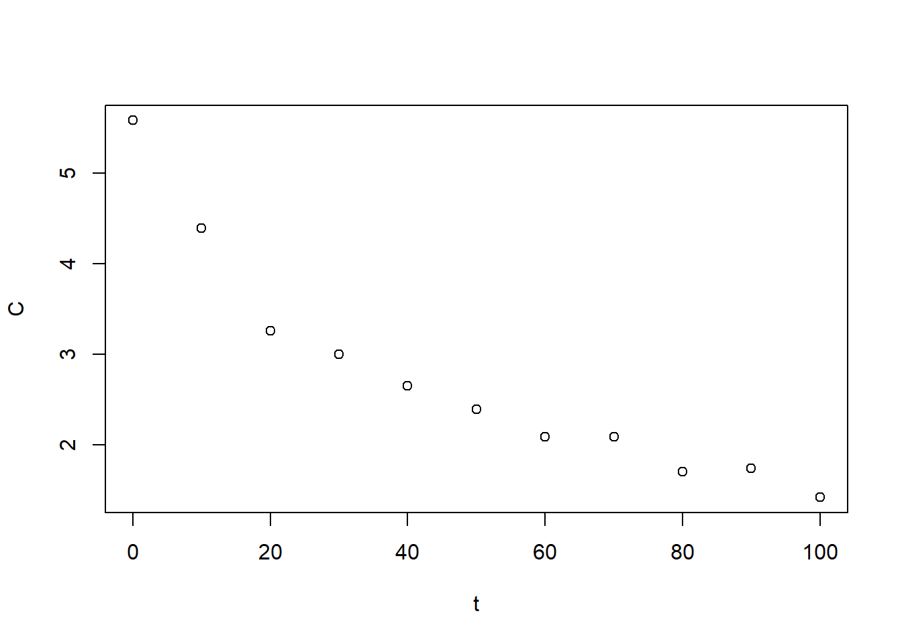
6.8.2 Solution
To use nls, we need to select an initial guess. With initial guess \(a=6\), \(r=-1\) we find
a r
5.0657795 -0.0143575 
The best fit (\(a=5.07\), \(r=-0.014\)) is not satisfactory.
For the biexponential, we need initial guesses for \(a_1\) and \(a_2\), \(r_1\) and \(r_2\). We first took \(a_1\) and \(a_2\) equal to half of the fitted \(a\) value above, and \(r_1=r_2=-0.014\), again, from the fit above. This starting point fails to return a value. We then decreased \(r_2\) to \(-0.05\) to find:
a_1 a_2 r_1 r_2
3.534782830 2.076126883 -0.008545831 -0.073312476 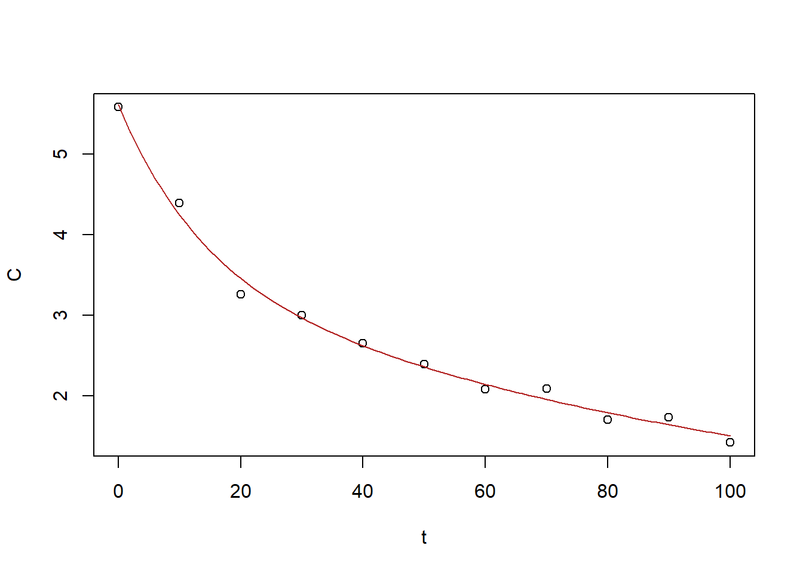
These values: \(a_1=3.53\), \(a_2=2.08\), \(r_1=-0.0085\), \(r_2=-0.073\) provide a good fit.
Alternatively, we try applying gradient descent. First we declare the gradient descent function as in Module 5:
library(numDeriv) # contains functions for calculating gradient
# define function that implement gradient descent. Inputs
# are the objective function f, the initial parameter
# estimate x0, the size of each step, the maximum number of
# iterations to be applied, and a threshold gradient below
# which the landscape is considered flat (and so iterations
# are terminated)
grad.descent = function(f, x0, step.size = 0.05, max.iter = 200,
stopping.deriv = 0.01, ...) {
# record the number of parameters to be estimated (i.e.
# the dimension of the parameter space)
n = length(x0)
# initialize a matrix to record the sequence of
# estimates
xmat = matrix(0, nrow = n, ncol = max.iter)
xmat[, 1] = x0 # the first row of matrix xmat is the initial 'guess'
for (k in 2:max.iter) {
# loop over the allowed number of steps Calculate
# the gradient (a vector indicating steepness and
# direct of greatest ascent)
grad.current = grad(f, xmat[, k - 1], ...)
# Check termination condition: has a flat valley
# bottom been reached?
if (all(abs(grad.current) < stopping.deriv)) {
k = k - 1
break
}
# Step in the opposite direction of the gradient
xmat[, k] = xmat[, k - 1] - step.size * grad.current
}
xmat = xmat[, 1:k] # Trim any unused columns from xmat
return(list(x = xmat[, k], xmat = xmat, k = k))
}Next, we define a sum-of-squared-errors (SSE) function for the exponential, as follows:
# define SSE
determine_sse_exp <- function(x) {
pred <- (x[1] * exp(x[2] * t))
sse <- sum((C - pred)^2)
return(sse)
}We now call the gradient descent function. The function as written is very sensitive to the choice of step-size, so a small step-size is required to achieve convergence. This demands that a large number of steps are allowed, even from an initial guess that is close to the best-fit.
x0 = c(5.5, -0.01)
gd = grad.descent(determine_sse_exp, x0, step.size = 0.00002,
max.iter = 400000, stopping.deriv = 0.01)
# x0_out <- c(gd$x, determine_sse_exp(gd$x))
x0_out <- gd$x
x0_out[1] 5.82416193 -0.06119189plot(BE_data)
curve(x0_out[1] * exp(x0_out[2] * x), from = 0, to = 100, add = TRUE,
col = "firebrick")The best-fit is of \(a=5.50947400\), \(r= -0.04928845\) is unsatisfactory
We next define a sum-of-squared-errors (SSE) function for the biexponential:
# define SSE
determine_sse <- function(x) {
pred <- (x[1] * exp(x[2] * t) + x[3] * exp(x[4] * t))
sse <- sum((C - pred)^2)
return(sse)
}and call the gradient descent function with the same initial guesses as above:
x0 = c(3, -0.03, 3, -0.06)
gd = grad.descent(determine_sse, x0, step.size = 0.00001, max.iter = 100000,
stopping.deriv = 0.01)
x0_out <- gd$x
x0_out[1] 2.690791165 -0.004104963 2.802982189 -0.041738755plot(BE_data)
curve(x0_out[1] * exp(x0_out[2] * x) + x0_out[3] * exp(x0_out[4] *
x), from = 0, to = 100, add = TRUE, col = "firebrick")
This fit: \(a_1=2.690791165\), \(r_1=-0.004104963\), \(a_2=2.802982189\), \(r_2=-0.041738755\) is decent.
Final note: the data were generated from the biexponential function with \(a_1=2\), \(a_2=4\), \(r_1=-0.1\), and \(r_2=-0.001\), altered by adding some small noise terms.
6.8.3 Exercise 2
Apply the genetic algorithm with ga to confirm the minimum of the egg-carton function in Example 9.
6.8.4 Solution
First we declare the egg-carton function:
f.egg <- function(x, y) {
-(y + 47) * sin(sqrt(abs(y + (x/2) + 47))) - x * sin(sqrt(abs(x -
(y + 47)))) + 0.001 * x^2 + 0.001 * y^2
}Next we call the genetic algorithm, with wide search bounds (-200 to 200) for each parameter:
library(GA)
ga1 <- ga(type = "real-valued", fitness = function(x) -f.egg(x[1],
x[2]), lower = c(-200, -200), upper = c(200, 200), maxiter = 30)GA | iter = 1 | Mean = 5.589807 | Best = 243.453722
GA | iter = 2 | Mean = 37.65332 | Best = 243.45372
GA | iter = 3 | Mean = 34.55112 | Best = 243.52693
GA | iter = 4 | Mean = 44.66904 | Best = 265.27007
GA | iter = 5 | Mean = 57.8448 | Best = 266.4818
GA | iter = 6 | Mean = 26.21427 | Best = 266.48180
GA | iter = 7 | Mean = 30.6800 | Best = 266.4818
GA | iter = 8 | Mean = 27.64206 | Best = 266.48180
GA | iter = 9 | Mean = 54.96501 | Best = 266.48180
GA | iter = 10 | Mean = 91.44821 | Best = 266.48180
GA | iter = 11 | Mean = 192.4639 | Best = 266.4818
GA | iter = 12 | Mean = 189.6778 | Best = 266.5143
GA | iter = 13 | Mean = 210.2262 | Best = 266.6820
GA | iter = 14 | Mean = 223.351 | Best = 266.682
GA | iter = 15 | Mean = 176.5155 | Best = 266.6820
GA | iter = 16 | Mean = 163.2122 | Best = 266.6820
GA | iter = 17 | Mean = 157.0652 | Best = 266.6820
GA | iter = 18 | Mean = 182.6798 | Best = 266.6820
GA | iter = 19 | Mean = 198.1779 | Best = 266.6834
GA | iter = 20 | Mean = 215.6551 | Best = 266.6834
GA | iter = 21 | Mean = 206.1483 | Best = 266.6834
GA | iter = 22 | Mean = 225.1222 | Best = 266.6834
GA | iter = 23 | Mean = 201.7200 | Best = 266.6834
GA | iter = 24 | Mean = 203.1510 | Best = 266.6834
GA | iter = 25 | Mean = 220.9440 | Best = 266.6834
GA | iter = 26 | Mean = 214.7430 | Best = 266.6834
GA | iter = 27 | Mean = 224.0534 | Best = 266.6834
GA | iter = 28 | Mean = 178.4590 | Best = 266.6834
GA | iter = 29 | Mean = 199.3457 | Best = 266.6834
GA | iter = 30 | Mean = 200.0797 | Best = 266.6834Next we plot the results of the genetic algorithm search as well as print summary of the results to confirm that the fitness function value obtained through this method is the same as the value obtained through simulated annealing.
plot(ga1)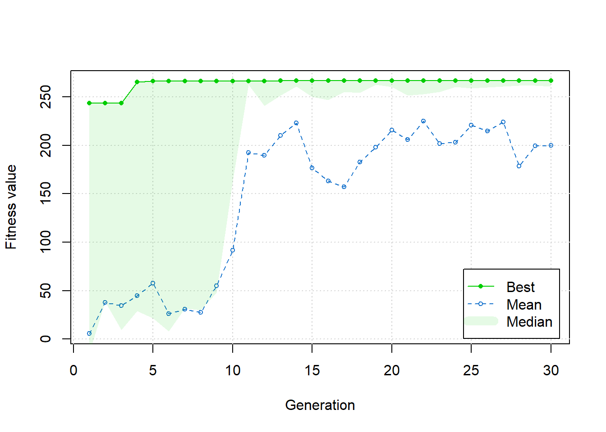
summary(ga1)-- Genetic Algorithm -------------------
GA settings:
Type = real-valued
Population size = 50
Number of generations = 30
Elitism = 2
Crossover probability = 0.8
Mutation probability = 0.1
Search domain =
x1 x2
lower -200 -200
upper 200 200
GA results:
Iterations = 30
Fitness function value = 266.6834
Solution =
x1 x2
[1,] -160.8756 94.89672The result (-160.8756, 94.89672) is in close agreement with the result for Example 9.
6.8.5 Exercise 3
Extend Example 11 to calibrate all four model parameters \(\alpha\), \(\beta\), \(\gamma\), and \(\delta\) to the following dataset, with initial states \(x=0.01\) and \(y=1.0\). Use either simulated annealing or a genetic algorithm. You can generate a simulation with the predictions at the time-points corresponding to the observations by setting Time <- seq(0, 8, by = .2) in the simulation script above. If you have trouble finding a suitable initial guess, try \(\alpha=10\), \(\beta=1\), \(\gamma=1\), \(\delta=1\).
6.8.6 Solution
First, define the SSE function
determine_sse_ex3 <- function(p) {
# input parameters are the kinetic parameters of the
# model
newPars <- c(p[1], p[2], p[3], p[4])
# initial populations for x1 and x2, respectively
newState <- c(x1 = 0.01, x2 = 1)
# time-grid as specified
Time <- seq(0, 8, by = 0.2)
# model
newLotVmod <- function(Time, State, newPars) {
with(as.list(c(State, newPars)), {
dx1 = x1 * (p[1] - p[2] * x2)
dx2 = -x2 * (p[3] - p[4] * x1)
return(list(c(dx1, dx2)))
})
}
library(deSolve)
# simulation
new_out1 <- as.data.frame(ode(func = newLotVmod, y = newState,
parms = newPars, times = Time))
x1_obs_ex <- c(0.001, 0.043, 0.18, 0.86, 3.6, 3.24, 0.13,
0.0075, 0.00095, 0.0079, 0.00012, 0.00012, 0.00015, 0.00026,
0.00057, 0.0016, 0.0052, 0.021, 0.084, 0.39, 1.8, 5.3,
0.72, 0.028, 0.0024, 0.01, 0.00019, 0.00013, 0.00013,
0.00019, 0.00037, 0.00095, 0.0062, 0.01, 0.04, 0.18,
0.84, 3.6, 3.3, 0.13, 0.0091)
x2_obs_ex <- c(0.67, 1.2, 5.1, 0.78, 0.13, 5.7, 8.2, 7.5,
5.6, 4.4, 3, 5.3, 2.2, 1.9, 1.4, 1.4, 1.2, 1.1, 2.3,
1.6, 0.25, 3.8, 8.4, 8.3, 6.4, 5, 4.5, 1.9, 2.8, 2.9,
1.6, 2, 1.7, 4.2, 1.8, 2.7, 1.3, 2, 6.8, 8.7, 7.4)
# determine SSE
sse <- sum((x1_obs_ex - new_out1$x1)^2) + sum((x2_obs_ex -
new_out1$x2)^2)
return(sse)
}Running simulated annealing, we try a range of bounds that ensure the simulation runs smoothly and arrive at a good fit:
$value
[1] 52.58729
$par
[1] 9.688079 3.097912 1.035242 2.076327Alternatively, running a genetic algorithm we can arrive at a similar result:
library(GA)
ga3 <- ga(type = "real-valued", fitness = function(x) -determine_sse_ex3(c(x[1],
x[2], x[3], x[4])), lower = c(0.1, 0.1, 0.1, 0.1), upper = c(20,
10, 5, 5), maxiter = 25)GA | iter = 1 | Mean = -1.279049e+67 | Best = -4.693969e+02
GA | iter = 2 | Mean = -5296.9794 | Best = -469.3969
GA | iter = 3 | Mean = -1341.4363 | Best = -437.7628
GA | iter = 4 | Mean = -685.2232 | Best = -437.7628
GA | iter = 5 | Mean = -637.5083 | Best = -437.7628
GA | iter = 6 | Mean = -595.0994 | Best = -437.7628
GA | iter = 7 | Mean = -597.1370 | Best = -437.7628
GA | iter = 8 | Mean = -593.8506 | Best = -437.7628
GA | iter = 9 | Mean = -576.1049 | Best = -434.0252
GA | iter = 10 | Mean = -559.1329 | Best = -434.0252
GA | iter = 11 | Mean = -1529.7803 | Best = -387.7072
GA | iter = 12 | Mean = -597.7009 | Best = -387.7072
GA | iter = 13 | Mean = -521.3438 | Best = -387.7072
GA | iter = 14 | Mean = -585.0047 | Best = -378.8299
GA | iter = 15 | Mean = -534.7539 | Best = -378.8299
GA | iter = 16 | Mean = -511.1798 | Best = -354.9926
GA | iter = 17 | Mean = -493.9326 | Best = -334.8149
GA | iter = 18 | Mean = -804.1124 | Best = -277.2302
GA | iter = 19 | Mean = -476.4043 | Best = -277.2302
GA | iter = 20 | Mean = -493.5554 | Best = -277.2302
GA | iter = 21 | Mean = -626.6152 | Best = -277.2302
GA | iter = 22 | Mean = -503.3496 | Best = -277.2302
GA | iter = 23 | Mean = -478.7910 | Best = -277.2302
GA | iter = 24 | Mean = -452.3181 | Best = -277.2302
GA | iter = 25 | Mean = -440.9315 | Best = -130.1073summary(ga3)-- Genetic Algorithm -------------------
GA settings:
Type = real-valued
Population size = 50
Number of generations = 25
Elitism = 2
Crossover probability = 0.8
Mutation probability = 0.1
Search domain =
x1 x2 x3 x4
lower 0.1 0.1 0.1 0.1
upper 20.0 10.0 5.0 5.0
GA results:
Iterations = 25
Fitness function value = -130.1073
Solution =
x1 x2 x3 x4
[1,] 10.56185 2.892053 0.9918592 3.0288246.8.7 Exercise 4
Consider the task of finding the minimum of the function \(f(x,y)=x^4 + y^2\), plotted below. Clearly, the minimum is zero, and numerical optimization routines will have no trouble estimating that solution. However, because the curvature at the minimum is much different along the \(x\)- and \(y\)-directions, most numerical algorithms will do a better job estimating one parameter compared to the other. This can be well-illustrated by applying the rejection method to this problem and noting the relative spread in the posterior distributions. Implement the rejection algorithm provided above with uniform prior distributions on [-1, 1] for both the \(x\) and \(y\) values. Choose a rejection threshold that provides an acceptance rate of about 1%. Which estimate is provided with more confidence (i.e. which posterior is more tightly distributed? How can you relate that back to the curvature of the function at the minimum?.
6.8.8 Solution
We modify the rejection method code to apply to this function:
We then call the rejection algorithm and check the acceptance rate
# set seed
set.seed(132)
# simulate 20000 times with a threshold of 0.15
sampled_parameter_values_squared_distances = sample_by_rejection(20000,
0.005)
# report the number of accepted values among the 200000
# samples
sum(sampled_parameter_values_squared_distances$accepted)[1] 324Finally, we plot the posterior distributions. As expected, the posterior is much tighter in the x-direction, in which direction the objective surface is steep, as opposed to the \(y\)-direction, in which the objective is shallow.
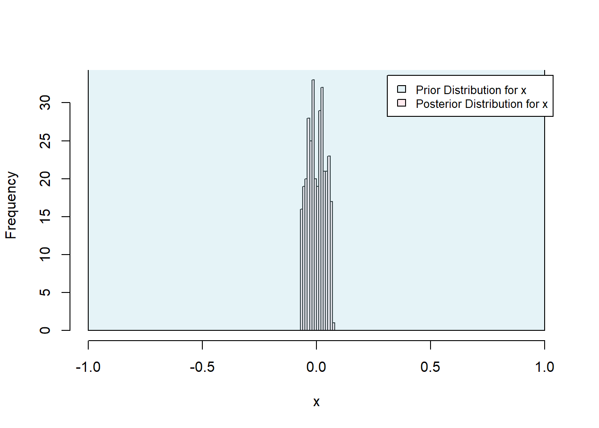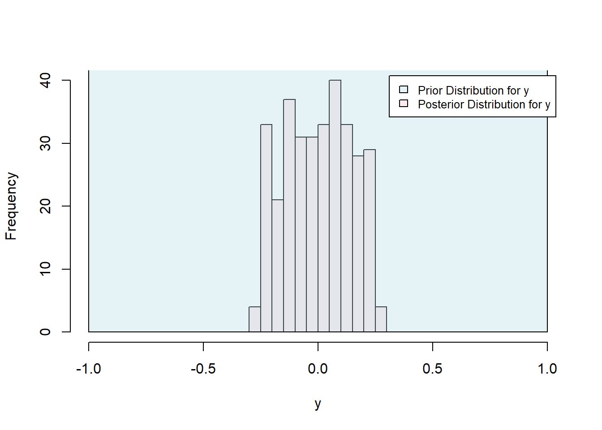
6.8.9 Exercise 5
Repeat example 11 by applying the rejection algorithm to estimate the values of \(\beta\) and \(\gamma\) by fitting the Lotka-Volterra model to the data provided below. Use initial conditions \(x = 0.008792889\), \(y = 1.595545\) as in the example. Use uniform prior distributions of [2,30] for \(\beta\) and [1,4] for \(\gamma\), and choose a rejection threshold that provides an acceptance rate of about 1%. Do you find that one parameter is more confidently estimated (tighter distribution) than the other? Use the data shown below. To avoid errors in the simulation, you can add the options method = "radau", atol = 1e-6, rtol = 1e-6 to the call to ode.
t_obs_ex5 <- c(0, 0.2, 0.4, 0.6, 0.8, 1, 1.2, 1.4, 1.6, 1.8,
2, 2.2, 2.4, 2.6, 2.8, 3, 3.2, 3.4, 3.6, 3.8, 4, 4.2, 4.4,
4.6, 4.8, 5, 5.2, 5.4, 5.6, 5.8, 6, 6.2, 6.4, 6.6, 6.8, 7,
7.2, 7.4, 7.6, 7.8, 8)
x1_obs_ex5 <- c(0.0091, 0.043, 0.2, 0.82, 3.4, 2.9, 0.12, 0.0077,
0.00093, 0.00026, 0.00014, 0.00013, 0.00015, 0.00025, 0.00054,
0.0015, 0.0051, 0.02, 0.087, 0.36, 1.7, 5.6, 0.66, 0.029,
0.0024, 0.00048, 0.00019, 0.00012, 0.00013, 0.00019, 0.00035,
0.001, 0.003, 0.01, 0.041, 0.19, 0.88, 3.8, 3.2, 0.13, 0.0078)
x2_obs_ex5 <- c(0.82, 1.1, 0.98, 0.65, 1.1, 5.1, 7.1, 7.9, 4.3,
3.5, 3.8, 3.9, 2.5, 2.1, 1.6, 1.4, 1.2, 1, 0.92, 0.57, 0.73,
3.6, 6.7, 9.1, 5.5, 4.7, 4.5, 3, 2.9, 2.7, 1.7, 2, 1.7, 1.3,
0.98, 0.98, 0.84, 1.6, 6.5, 8.2, 7.7)6.8.10 Solution
We begin by defining the SSE function:
library(deSolve)
determine_sse_ex5 <- function(p) {
# first four input parameters are the kinetic
# parameters of the model
newPars <- c(p[1], p[2])
# last tw parameters are the initial populations for x
# and y, respectively
newState <- c(x1 = 0.008792889, x2 = 1.595545)
# time-grid is the same as before, no need to redefine
Time_ex5 <- seq(0, 8, by = 0.2)
Time_ex5
# kinetics
newLotVmod <- function(Time, State, newPars) {
with(as.list(c(State, newPars)), {
dx1 = x1 * (30 - p[1] * x2)
dx2 = -x2 * (p[2] - 6 * x1)
return(list(c(dx1, dx2)))
})
}
new_out1 <- as.data.frame(ode(func = newLotVmod, y = newState,
parms = newPars, times = Time_ex5, method = "radau",
atol = 0.000001, rtol = 0.000001))
sse <- sum((x1_obs_ex5 - new_out1$x1)^2) + sum((x2_obs_ex5 -
new_out1$x2)^2)
return(sse)
}We then define the rejection method algorithm:
We then call the rejection method algorithm, and confirm the accepstance rate:
[1] 75Plotting the posterior distributions, we see mean values of about \(\beta \approx 14\), \(\gamma \approx 1.3\). The distribution for \(\beta\) is tighter than that for \(\gamma\), suggesting improved estimation of \(\beta\).
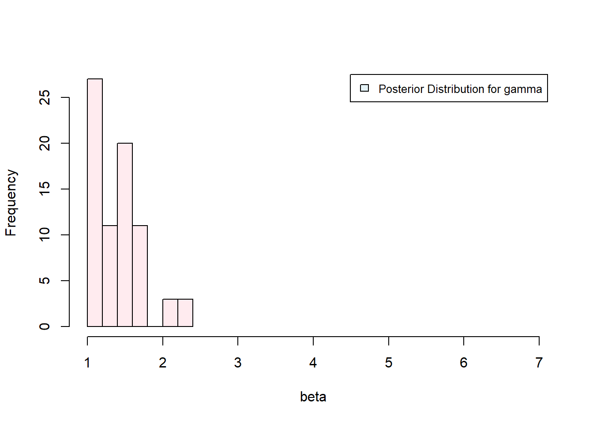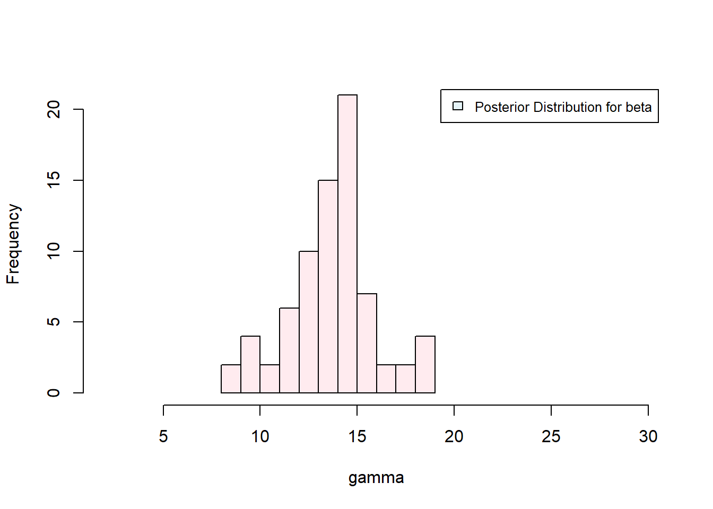